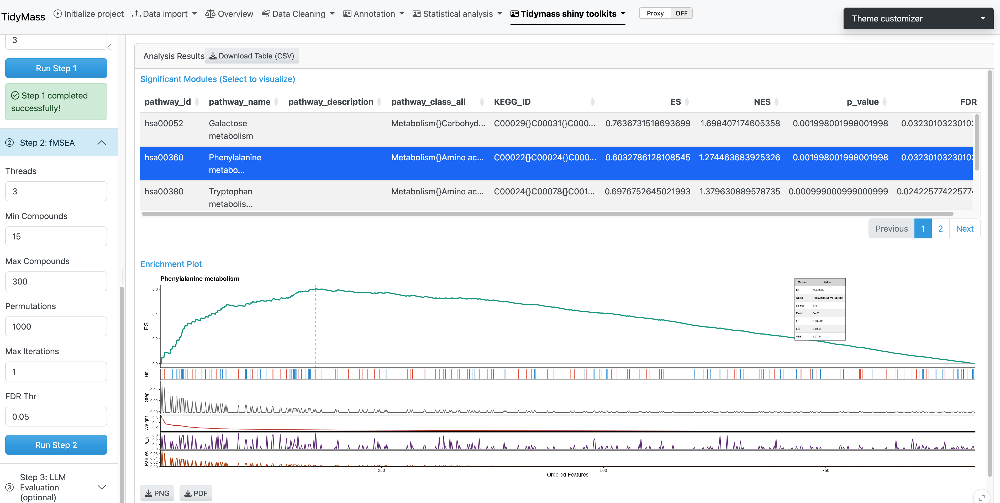

2 Analysis Workflow
The featureMSEA shiny module walks you through the analysis in three sequential steps. Launch the TidyMass Shiny app and click fMSEA Analysis under Tidymass Shiny Toolkits.

Figure 2.1: fMSEA Analysis module entry point
2.1 Data Upload
You need three required files in .rda format. Click the respective buttons to select each file.

Figure 2.2: Data upload interface
Required files:
| File | Description |
|---|---|
| Feature Table | Processed feature table from your metabolomics experiment |
| MS1 Database | Metabolite database for annotation — KEGG or HMDB |
| Pathway Database | Pathway database — KEGG, HMDB, iMETpD, Reactome, or WikiPathways |
Optional:
| File | Description |
|---|---|
| Existing Results | A previously saved fmsea_result.rda to resume a prior analysis |

Figure 2.3: Selecting input files
Shortcut: If you already have a saved results object, upload it via Existing Results to skip Steps 1 and 2 entirely.

Figure 2.4: Uploading an existing results object
2.2 Step 1 — Annotation
The first step annotates metabolic features against the MS1 database by matching m/z values.

Figure 2.5: Step 1: annotation parameters
Parameters:
| Parameter | Description | Default |
|---|---|---|
Column |
Chromatographic column type | "rp" |
DB Type |
Annotation database | "KEGG" |
MS1 PPM |
Mass accuracy threshold (ppm) | 15 |
RT Tol (s) |
Retention time tolerance for MFC clustering | 10 |
Isotope No. |
Maximum isotopes to consider | 3 |
Click Run Step 1. Annotation may take several minutes depending on feature count.
Tip:
"rp"(reverse phase) is appropriate for most lipidomics and metabolomics experiments; use"hilic"for polar metabolite profiling.
2.3 Step 2 — Enrichment Analysis
Step 2 uses the annotated features from Step 1 to run the GSEA-style pathway enrichment.

Figure 2.6: Step 2: fMSEA analysis parameters
Parameters:
| Parameter | Description | Default |
|---|---|---|
Threads |
Parallel processing threads | 3 |
Min Compounds |
Minimum pathway size (compounds) | 15 |
Max Compounds |
Maximum pathway size (compounds) | 300 |
Permutations |
Statistical permutations | 1000 |
Max Iterations |
Algorithm iterations | 1 |
FDR Thr |
FDR significance threshold | 0.05 |
Click Run Step 2. Analysis time scales with the number of permutations and detected pathways.
Note: Increasing
Permutationsimproves p-value precision but significantly increases runtime.1000is a good balance for exploratory analysis.
2.4 Results Visualization
After Step 2 completes, results are displayed in an interactive two-panel interface:
- Left panel — Significant Modules Table: Lists all significantly enriched pathways with NES (Normalized Enrichment Score), p-value, and FDR. Click any row to update the enrichment plot.
- Right panel — Enrichment Plot: Displays the running enrichment score profile for the selected pathway.

Figure 2.7: Results visualization: pathway table and enrichment plot
Download options:
- Pathway tables as CSV
- Enrichment plots as PNG or PDF